This tutorial describes how to use COPASI’s cross section task. We begin by importing an oscillating model from the BioModel database, and explore it through time course simulations before extracting some characteristics using the cross-section task.
We start by downloading BioModel 239 (https://www.ebi.ac.uk/biomodels-main/BIOMD0000000329) from the BioModels Database. Import the model into COPASI, and then navigate to the Tasks, and there to Time Course. Specifying a duration of 100 seconds, using an automatic interval size. Next we specify a plot for this simulation run, by selecting the output assistant and creating a plot for “Concentrations, Volumes, and Global Quantity Values”. By clicking on “Hide All” and then clicking on the “[Calcium]” label we yield the following graph:
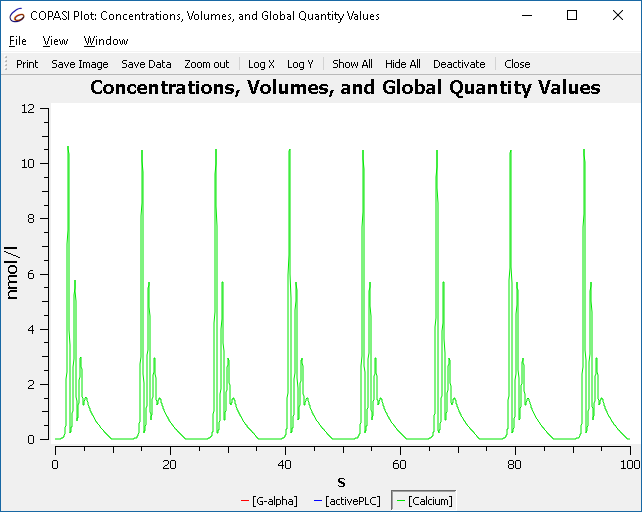
To investigate how this simulation behavior changes when a parameter value is modified we use the slider feature of COPASI. For that select Tools\Show Sliders from the menu or click the 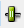 button in the tool bar. We define a new slider by clicking on “New Sliders”, and selecting the “constant” parameter of reaction R2.
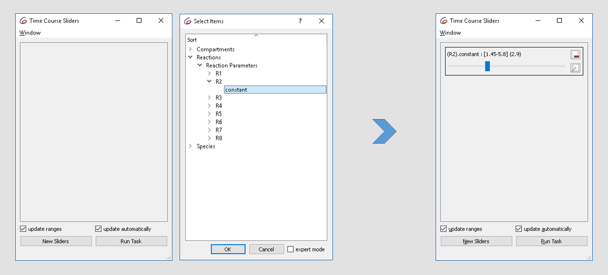
Note that the current value of the parameter is “2.9”, now modifying the value in the range of 1.5 to 3 while looking at the plot we notice that the dynamics of the oscillation changes from basic oscillations to bursting.
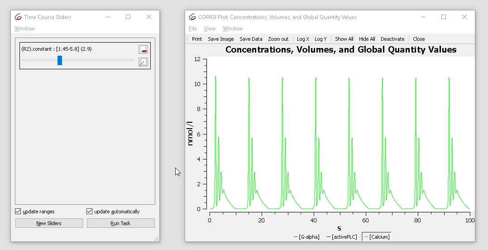
With the cross-section task, we can detect crossings through specified surfaces through the phase space. This is done by selecting a variable, as well as a certain value as well as the direction of the crossing we want to observe. For the purposes of this tutorial we want to look at the peaks (or maxima) of the calcium oscillations obtained before. For that we select the rate of calcium as variable in the cross-section task, waiting for the value of 0 being crossed in the negative direction. We stop detecting the cross-section after 100 seconds.
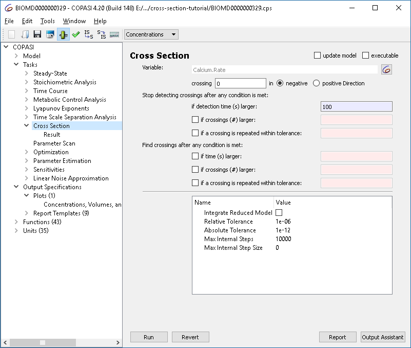
To capture the result, we alter the plot created before, such that instead of using lines, circles are being used to represent the values.
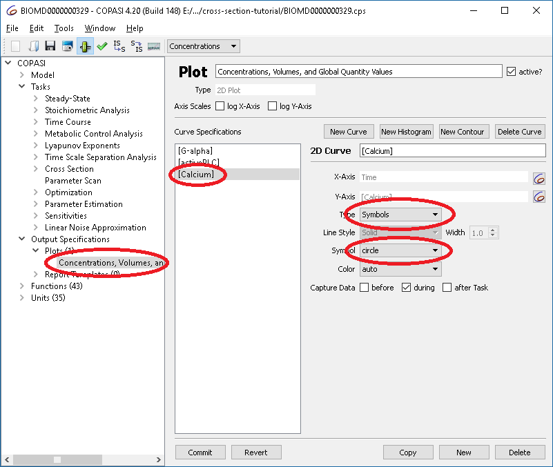
Now we are ready to run the cross section, yielding a result of:
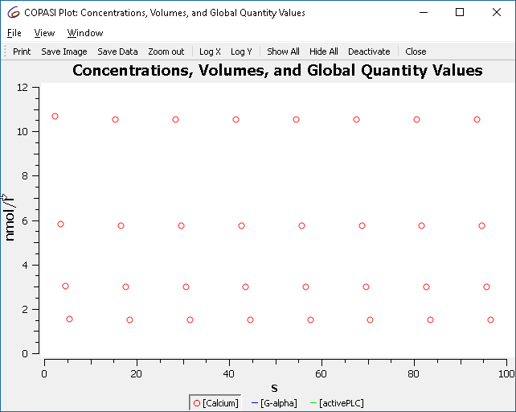
Which are the maxima that we saw before when simulating the model.
We already know that the behavior of the oscillations change when we modify the parameter of reaction “R2”, using the scan task in combination with the cross-section task we can plot this in a bifurcation diagram. First we define the scan task: we set up a scan, over R2.constant and vary it in 100 intervals from 1.5 to 3. The subtask that should be carried out is the “Cross Section”. Since we want to see the change in behavior we want to track “output during subtask execution”.
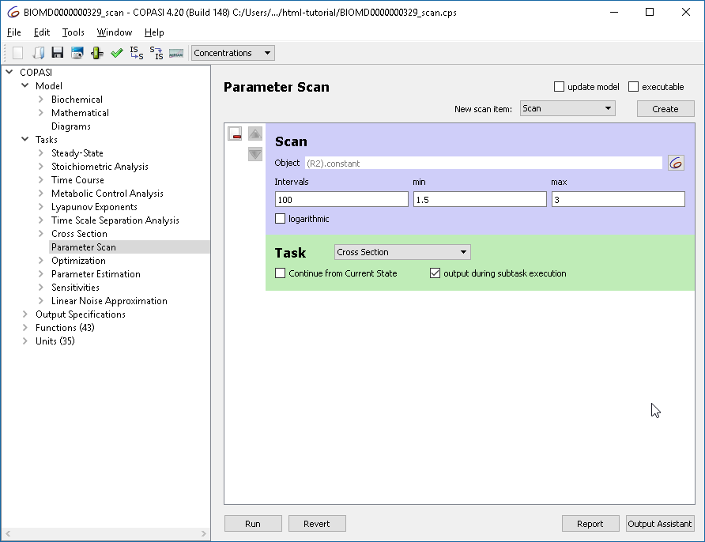
Next we define he plot to be used. Here we want R2.constant on the x axis and the concentration of calcium on the y axis. Again, we use circles to represent the calcium concentrations rather than lines. (Alternatively you could also select the output assistant and choose ‘Scan of Concentrations, Volumes and Global Quantity Values’).
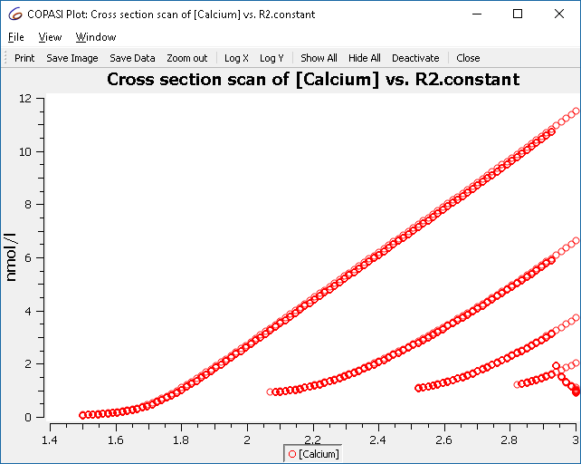
This plot represents all the maxima that occur, and not just those of the limit cycle. To improve the display, we tell the cross-section task to only collect the crossings after some conditions are met. The condition to specify is “time larger 50”.
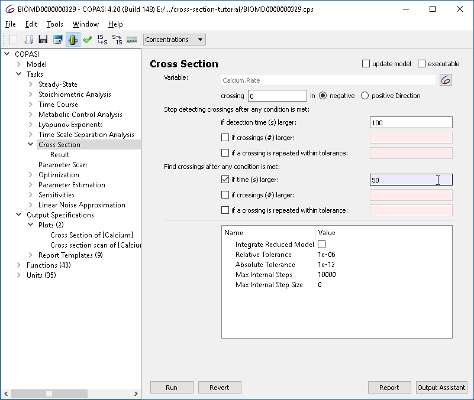
Re-running the parameter scan we now get only those crossings:
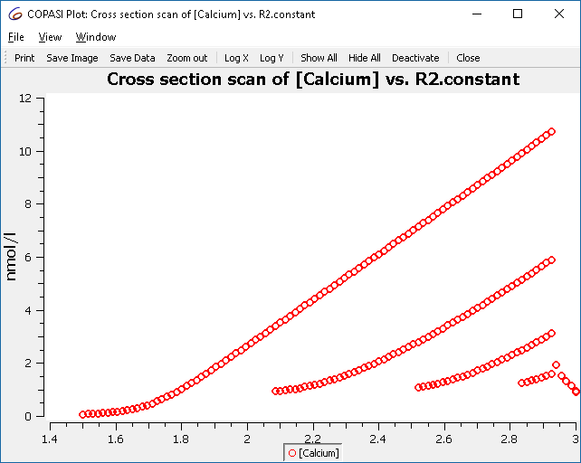
Using the other options in the cross-section task it is possible to find crossings more efficiently. Those settings are grouped into two sections:
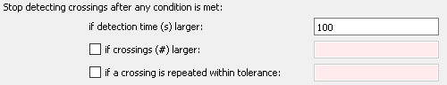
The first section determines when the simulation including the detection of crossing points is terminated. Before we used this to stop collecting crossings after 100 seconds. The other options mean:
Note that a maximum time for the simulation must be provided in any case, so that the simulation stops even when no crossings are detected or the crossings do not repeat.
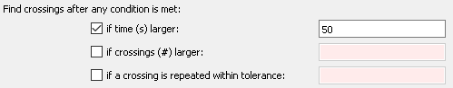
The second set of settings determines when the reporting of crossings is started. This is typically used to make sure that the output is only started after the systems has reached a stable long term behavior, e.g. a limit cycle. In the example, we used this to only collect crossings after 50 seconds, if this time interval is sufficient for the system to reach a limit cycle. Other settings here:
And here the complete example with the scan setup: Download »
As another example we show a route to chaos via period doubling bifurcations. The model is a chemical-reaction-kinetics analogon to Rössler’s simple chaotic attractor [1,2].
As in the previous example, we set up the cross section task to detect maxima of a variable (X2). The settings are chosen to allow a relatively efficient calculation of the bifurcation diagram:
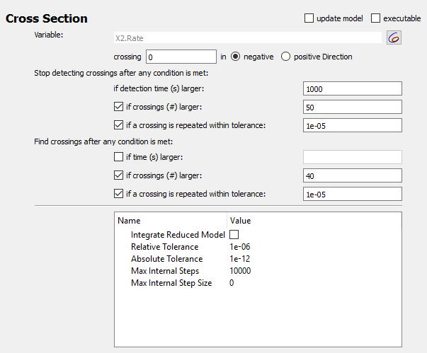
The scan task is set up to scan the autocatalytic expansion parameter from 0.05 to 0.2, and a plot with the scan parameter on the x axis and X2-concentration on the y axis is defined.
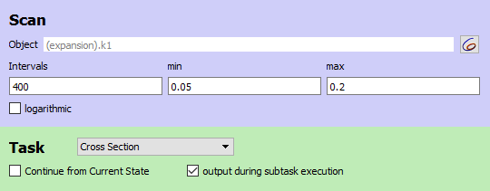
The result is the famous Feigenbaum diagram of the period doubling route to chaos.
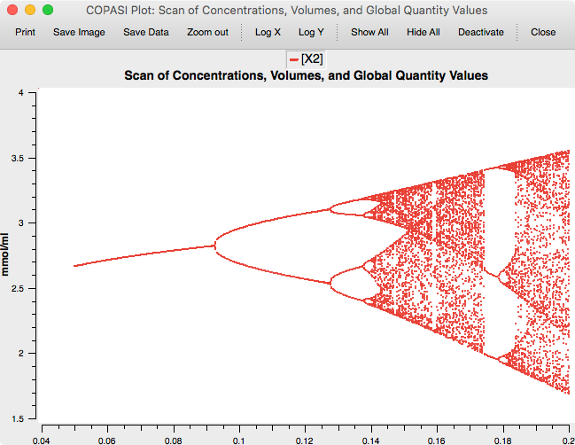
And the complete example with the scan setup: Download »
[1] O. E. Rössler: An Equation for Continuous Chaos. Physics Letters Vol. 57A no 5, pp 397-398, 1976.
[2] Baier, G., & Sahle, S. (1995). Design of hyperchaotic flows. Physical Review E, 51(4), R2712–R2714. doi:10.1103/PhysRevE.51.R2712